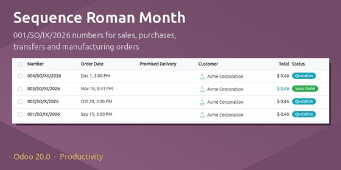

Productivity & Tools apps for Odoo
Odoo add-ons for backups, approvals, printing, menus, access and team knowledge. 13 apps, 6 free, for Odoo 16 to 20.
 Approval Workflow - Multi Level Approval on Any ModelDynamic approval workflow on any model without code: multi level approval with conditions, approvers per level, hidden buttons, field locking and signatures.
Approval Workflow - Multi Level Approval on Any ModelDynamic approval workflow on any model without code: multi level approval with conditions, approvers per level, hidden buttons, field locking and signatures. Database Backup - Auto Backup on Schedule with RetentionAutomatic database backup on a schedule: keeps the last daily and monthly backups, e-mail on failure, storage add-ons for a local folder or Google Drive.
Database Backup - Auto Backup on Schedule with RetentionAutomatic database backup on a schedule: keeps the last daily and monthly backups, e-mail on failure, storage add-ons for a local folder or Google Drive. Direct Print - Silent Print with QZ TrayDirect print of any report (PDF, ZPL, ESC/POS) to a local printer without the download or print dialog: printer per report, user and workstation, via QZ Tray.
Direct Print - Silent Print with QZ TrayDirect print of any report (PDF, ZPL, ESC/POS) to a local printer without the download or print dialog: printer per report, user and workstation, via QZ Tray. Document AI - Chat with Documents and Cited SourcesAI chat with documents: ask your PDF, DOCX and TXT files and get answers grounded in them, with the source passages cited (RAG with Google Gemini).
Document AI - Chat with Documents and Cited SourcesAI chat with documents: ask your PDF, DOCX and TXT files and get answers grounded in them, with the source passages cited (RAG with Google Gemini). Google Drive Backup - Database Backup to Your DriveGoogle Drive backup: send your scheduled auto backup of the database to your own Drive with one-click OAuth, no service-account keys. Add-on for Database Backup.
Google Drive Backup - Database Backup to Your DriveGoogle Drive backup: send your scheduled auto backup of the database to your own Drive with one-click OAuth, no service-account keys. Add-on for Database Backup. Hide Export Button - Hide Create, Delete, Duplicate per ModelHide export, hide delete, hide duplicate, hide create button and edit per model, for a user group or for everyone. Restrict actions without code.
Hide Export Button - Hide Create, Delete, Duplicate per ModelHide export, hide delete, hide duplicate, hide create button and edit per model, for a user group or for everyone. Restrict actions without code. Hide Menu User-wise - Hide Any Menu per UserHide menu items per user and control menu access: choose the apps and sub-menus each user should not see in a Hidden Menus tab on the user form.
Hide Menu User-wise - Hide Any Menu per UserHide menu items per user and control menu access: choose the apps and sub-menus each user should not see in a Hidden Menus tab on the user form. Knowledge Base - Company Wiki with RevisionsKnowledge base and company wiki in Odoo: pages with revision history, readable diff and restore, read in a clean docs site by employees, portal users or anyone.
Knowledge Base - Company Wiki with RevisionsKnowledge base and company wiki in Odoo: pages with revision history, readable diff and restore, read in a clean docs site by employees, portal users or anyone. Local Backup - Database Backup to a Server FolderDatabase backup to a local server folder: scheduled automatic backups written to a folder you choose, kept tidy by the retention policy. Add-on for Database Backup.
Local Backup - Database Backup to a Server FolderDatabase backup to a local server folder: scheduled automatic backups written to a folder you choose, kept tidy by the retention policy. Add-on for Database Backup.- PDF Preview - Open PDF Reports in a Browser TabPDF preview and report preview in the browser: invoices, orders and every other PDF report open in a new tab instead of downloading.

Roman Numeral Sequence - 001/SO/IX/2026 NumberingRoman numeral month in sequence numbers, like 001/SO/IX/2026: for sales orders, purchase orders, transfers and every document numbered by a sequence. Telegram Integration - Telegram Bot and NotificationsTelegram bot for Odoo: browse and create sales orders, invoices, purchases and contacts from Telegram chat, with real-time Telegram notification of events.
Telegram Integration - Telegram Bot and NotificationsTelegram bot for Odoo: browse and create sales orders, invoices, purchases and contacts from Telegram chat, with real-time Telegram notification of events.- WhatsApp AI Chatbot - Answers from Your DocumentsWhatsApp chatbot with AI that answers customer messages from your own documents, with sources. Connects Document AI to the WhatsApp Cloud API.